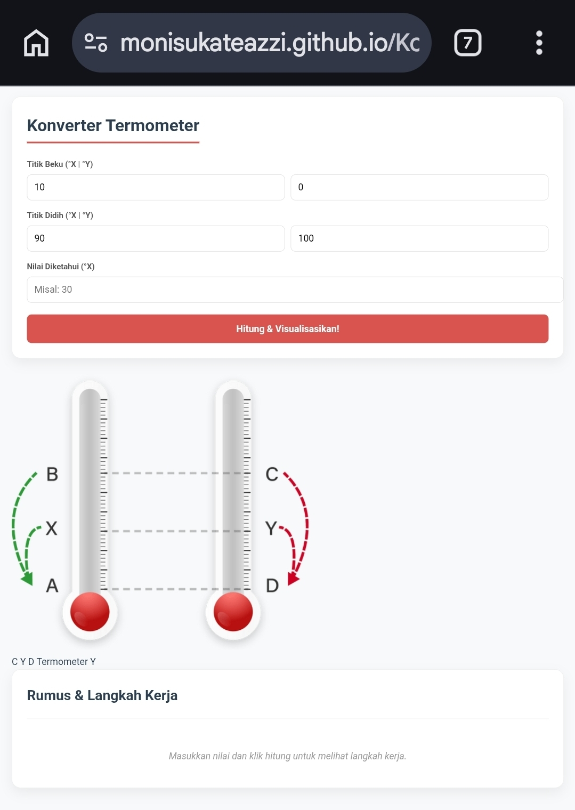
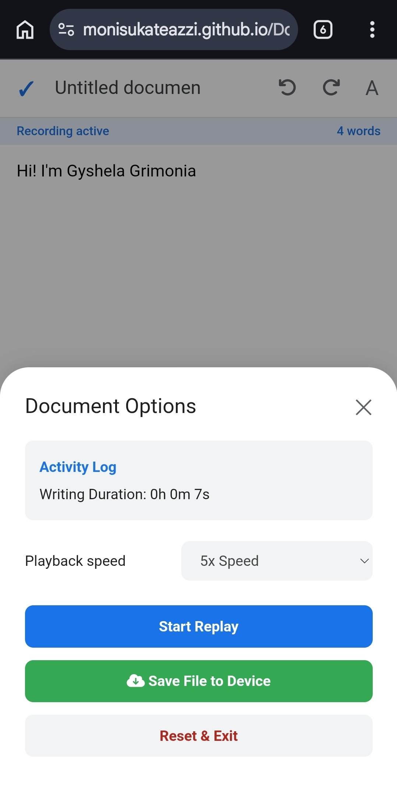
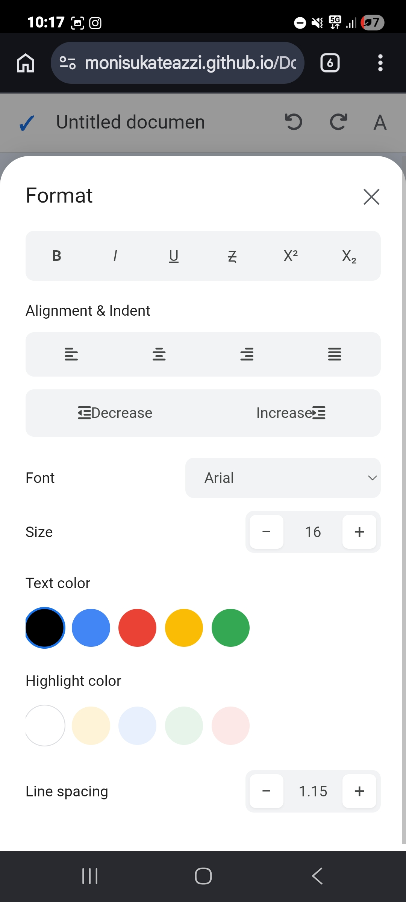
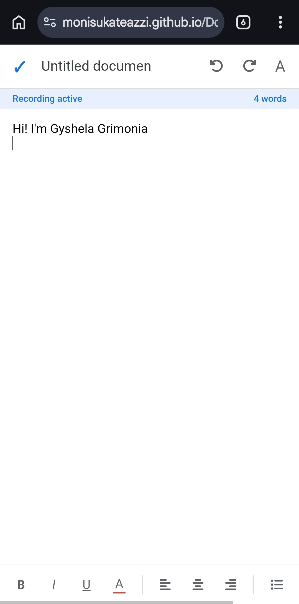

IndoWeatherCheck
I made IndoWeatherCheck because I wanted to see how real-time data works on the web and make something for daily life. This project gets weather information for places over Indonesia so users can easily check the current weather and forecasts. From this project I learned how to use APIs work with data and show content on a website.
Termometer X
I started Termometer X as a school project that involved doing thermometer calculations, which I found really boring and hard to do by hand. Of doing them over and over I made a website that does the calculations and temperature conversions for me. This project taught me how to turn math formulas into code and make a tool that solves a problem I had.

Sound Activated Lamp
I built this project to learn about electronics and make something interactive with an ESP32. The lamp turns on and off when it hears sound which shows how devices can automatically react to what's happening around them. From this project I learned about sensors, microcontrollers and how hardware and software work together.
Doculapse
Doculapse is a document editor that records how you write and turns it into a video that you can play back. I thought of this idea when I wondered how documents are made, not just what they look like when they are finished. Building this project has taught me about managing data, designing user experiences and making complex web applications.


